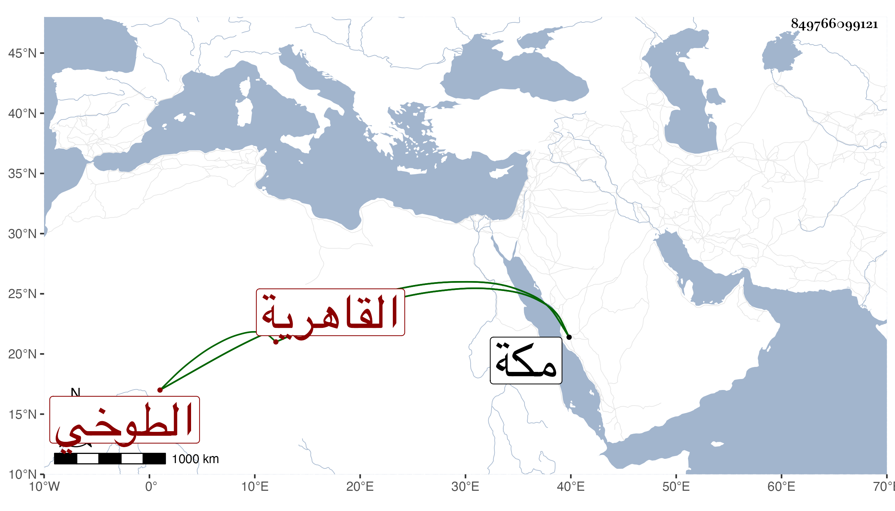

0902Sakhawi.DawLamic.ITO20230111-ara1.EIS1600.849766099121
Biography ID: 849766099121
659
فاطمة ابنة محمد بن محمد بن خلف الطوخي الأصل القاهرية سبطة الشمس العدوى ، أمها خالتي عزيزة الماضية بل هي أختى من الرضاع . ولدت في آخر سنة إحدى وثلاثين وثمانمائة ومات أبوها وهي صغيرة فكفلها جدها المشار اليه وسافر بها لمكة في البحر فجاورت ورجعت فزوجها وفارقها الزوج بعد موته وتعدد أزواجها ومنهم علي الكريدي واستولدها ابنتها زينب ولم يحصل على طائل ؛ وسافرت في أثناء سنة إحدى وتسعين في البحر لمكة صحبة عبد الرحمن حفيد الأدمى زوج ابنتها المذكورة فحجتا وعادتا مع الركب الموسمي فدخلتا في محرم التي تليها ، وبر الوالدة غير منقطع عنها من صغرها والى ان ماتت الوالدة .
